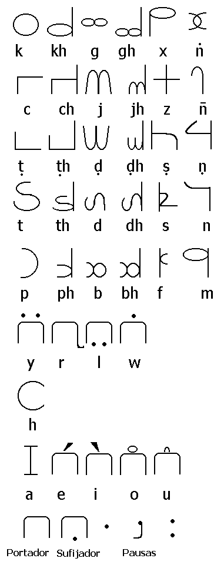

Pheuc
| Oclusivas sordas | Oclusivas sordas aspiradas | Oclusivas sonoras | Oclusivas sonoras aspiradas | Fricativas sordas | Nasales | |
| Guturales | k | kh | g | gh | x | n' |
| Palatales | c | ch | j | jh | z | ñ |
| Cerebrales | t. | t.h | d. | d.h | s. | n. |
| Dentales | t | th | d | dh | s | n |
| Labiales | p | ph | b | bh | f | m |
| Semivocales | y | r | l | w | ||
| Aspiradas | h |
| c, j, z, ñ | t., d., s., n. | t, d, s, n | r, l | h, m | a, e, i, o, u | |
| A-S | c | t. | t | r | h | a/o |
| A-P | ci | t.i | ti | rdi | hi | e/u |
| A-C | cu | t.u | tu | rdu | hu | er/ur |
| P-S | ce | t.e | te | rde | he | anta/anto |
| P-P | ciri | t.iri | tiri | rdiri | hiri | anti/antu |
| P-C | curu | t.uru | turu | rduru | huru | antir/antur |
| D-S | ñ | n. | n | l | m | ampa/ampo |
| D-P | ñi | n.i | ni | ldi | mi | ampe/ampu |
| D-P | ñu | n.u | nu | ldu | mu | amper/ampur |
| AP-S | co | t.o | to | rdo | ho | anda/ando |
| AP-P | cir | t.ir | tir | rdir | hir | andi/andu |
| AP-C | cur | t.ur | tur | rdur | hur | andir/andur |
| AD-S | ño | n.o | no | ldo | mo | amba/ambo |
| AD-P | ñir | n.ir | nir | ldir | mir | ambe/ambu |
| AD-C | ñur | n.ur | nur | ldur | mur | amber/ambur |
| PD-S | ñe | n.e | ne | lde | me | ata/oto |
| PD-P | ñiri | n.iri | niri | ldiri | miri | ate/otu |
| PD-C | ñuru | n.uru | nuru | lduru | muru | ater/otur |
| APD-S | j | d. | d | rto | hom | alda/aldo |
| APD-P | ji | d.i | di | rtir | him | aldari/aldori |
| APD-P | ju | d.u | du | rtur | hum | aldare/aldoru |
| M-S | z | s. | s | lto | moh | asta/osto |
| M-P | zi | s.i | si | ltir | mih | asti/osti |
| M-S | zu | s.u | su | ltur | muh | astir/ostir |
| En | Desde | Hacia | |
| Entonces | ci | cind.a | cind.elwa |
| Ahora | ñi | ñihfa | ñihfelwa |
| Antes | bú | búla | búrt.ela |
| Después | phe | pheca | phecera |
| Prox.1 | fí | fíja | fígen.a |
| Prox.2 | sí | síja | sígen.a |
| Prox.3 | s.í | s.íja | s.ígen.a |
| Prox.4 | zí | zíja | zígen.a |
| Prox.5 | xí | xíja | xígen.a |
| Arriba | khoc | khoka | khokes.a |
| Abajo | bhot. | bhoca | bhocesa |
| La cima | wén | wéña | wéñera |
| El fondo | yoz | yoza | yozela |
| La izquierda | gá | gága | gágera |
| La derecha | pha | phapa | phapera |
| Adelante | dín | dínd.a | dínd.ela |
| Atrás | túl | túlt.a | túlt.ela |
| El comienzo | chár | chára | cháre |
| El final | dhir | dhira | dhire |
| Adentro | n'az | n'aza | n'axela |
| Afuera | mam | mama | mamera |
| Cerca | hoh | hoha | hohema |
| Lejos | wiñ | wiña | wiñela |
| PL | PS | PR | FT | FL | ||
| 1p | jotur | jot | jo | jole | jolit | PP = cat |
| 2p | jatur | jat | ja | jale | jalit | PA = ca |
| 3p | jetur | jet | je | jele | jelit | PF = cale |
| 4p | jitur | jit | ji | jile | jilit | GR = cí |
| 5p | jutur | jut | ju | jule | julit |
| PL | PS | PR | FT | FL | ||
| 1p | d.orú | d.or | d.o | d.ole | d.olí | PP = t.á |
| 2p | d.arú | d.ar | d.a | d.ale | d.alí | PA = t.a |
| 3p | d.erú | d.er | d.e | d.ele | d.elí | PF = t.al |
| 4p | d.irú | d.ir | d.i | d.ile | d.ilí | GR = t.í |
| 5p | d.urú | d.ur | d.u | d.ule | d.ulí |
| PL | PS | PR | FT | FL | ||
| 1p | doñgo | doñ | do | dori | dobi | PP = táñ |
| 2p | dañgo | dañ | da | dari | dabi | PA = ta |
| 3p | deñgo | deñ | de | deri | debi | PF = tar |
| 4p | diñgo | diñ | di | diri | dibi | GR = tí |
| 5p | duñgo | duñ | du | duri | dubi |
| PL | PS | PR | FT | FL | ||
| 1p | ñon | ño | no | n.o | n.oldi | PP = ñañ |
| 2p | ñan | ña | na | n.a | n.aldi | PA = nañ |
| 3p | ñen | ñe | ne | n.e | n.eldi | PF = n.añ |
| 4p | ñin | ñi | ni | n.i | n.ildi | GR = ni |
| 5p | ñun | ñu | nu | n.u | n.uldi |
| PL | PS | PR | FT | FL | ||
| 1p | zos | zo | so | s.o | s.orbi | PP = zas. |
| 2p | zas | za | sa | s.a | s.arbi | PA = sas. |
| 3p | zes | ze | se | s.e | s.erbi | PF = s.as. |
| 4p | zis | zi | si | s.i | s.irbi | GR = si |
| 5p | zus | zu | su | s.u | s.urbi |
| PL | PS | PR | FT | FL | ||
| 1p | rono | rolo | ro | rordi | rorlyon | PP = lon |
| 2p | rano | ralo | ra | rardi | rarlyon | PA = la |
| 3p | reno | relo | re | rerdi | rerlyon | PF = lir |
| 4p | rino | rilo | ri | rirdi | rirlyon | GR = le |
| 5p | runo | rulo | ru | rurdi | rurlyon |
| PL | PS | PR | FT | FL | ||
| 1p | hom | hor | ho | hir | hili | PP = mo |
| 2p | hom | hor | ha | hir | hili | PA = ma |
| 3p | hom | hor | he | hir | hili | PF = mi |
| 4p | hom | hor | hi | hir | hili | GR = mi |
| 5p | hom | hor | hu | hir | hili |
| PL | PS | PR | FT | FL | ||
| 1p | ato | ar | a | ala | aldala | PP = ador |
| 2p | eto | erdo | e | ela | eldala | PA = ada |
| 3p | ito | irdo | i | ila | ildala | PF = adla |
| 4p | erto | ero | er | erla | eldarla | GR = eda |
| 5p | irto | iro | ir | irla | ilderla |
| PL | PS | PR | FT | FL | ||
| 1p | owonto | owo | o | oyo | oyodi | PP = odor |
| 2p | olwonto | olwo | ol | olyo | olyodi | PA = odo |
| 3p | orwonto | orwo | or | oryo | oryodi | PF = odlo |
| 4p | ubonto | ubo | u | uyo | uyodi | GR = udo |
| 5p | urwonto | urwo | ur | uryo | uryodi |
